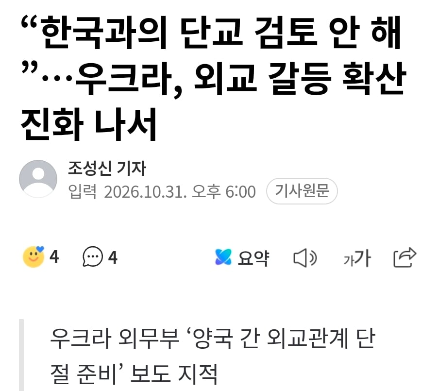
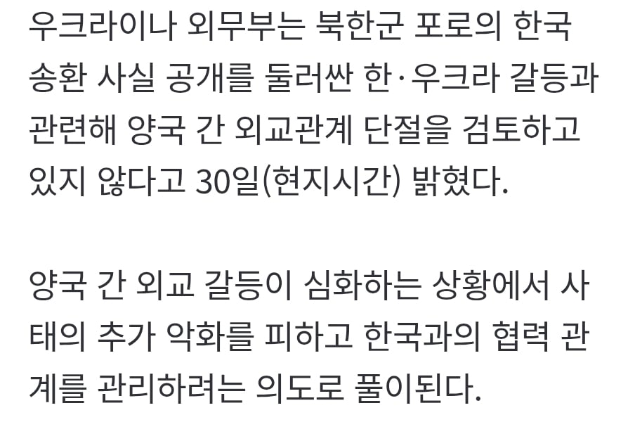
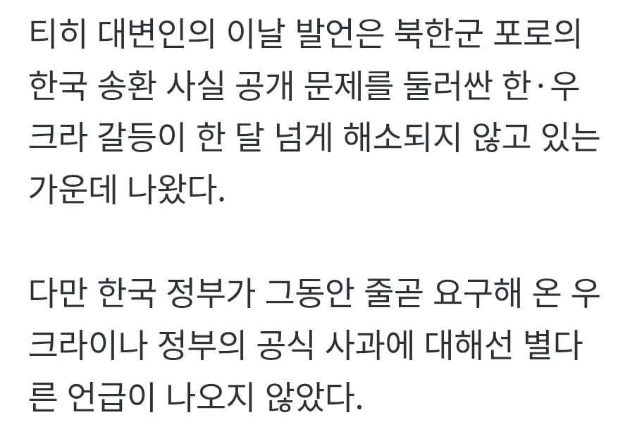

단교할라고 했어?
근데 러-우 왜 전쟁난거냐?
단교하고 포탄 생산 최대로 찍고 러시아랑 무역좀 하자
누가 더 아쉬운데 단교 ㅇㅈㄹ ㅋㅋㅋ
젤렌스키가 똥싸고있고 외무부는 치우려고 하고있고ㅋㅋㅋㅋ둘다 정신없을듯ㅋㅋ
저렇게 개소리하는데 우리나라 외교부도 한마디 해야하는거 아닌가? 나름 나라 영향력이 좀 커졌는데도, 아직 쩌리시절 트라우마 때문에 눈치보는게 ..참 그렇다..개소리 하는 놈한테 좀 질러줘도 될텐데
우린 이미 끊었기 때문에 할 필요 없음.
걍 뉘신지? 해버리면 됨
우크라이나랑은 원래 교역규모도 쥐꼬리만했고 정치적으로 엮일 것도 없고... 전후 재건 사업도 솔직히 막대한 자금 지원한 유럽과 미국이 가져갈게 뻔한데 굳이 저기 도와줄 이유도 없지. 휴전하면서 러시아경제제 풀리면 재빨리 러시아랑 교역재개하고 파탄난 러시아에서 기술협력으로 무기나 개발하는게 이득일듯. 과거 불곰사업도 러시아 무기기술 도입도 있지만 부카니스탄에 대한 지원을 차단한 효과가 컸으니...
니미 없어질 나라에서 공관 철수하겠다는데
왜 소매 붙들고 지랄임? 손 놔라